Capitolo 24 Funzioni usate nel libro
Presento le funzioni che sono state create da me per risolvere vari problemi di automazione, dalla creazione dei data set alla soluzione di alcuni problemi.
24.1 Istogramma
#############################################################################
#############################################################################
## Funzioni per generare i dati dell'esercizio 1
##
## genera_dati(brk,hhh=NULL,n,nnn=NULL,rand = T)
##
## brk intervalli (breaks)
## hhh aspetto presunto
## n numero totale individui
## nnn alternativo ad hhh, frequenza da riportare ad n
## rand i numeri sono casuali?
##
## tabl(x,...) shortcut personalizzato a kable
##
## x oggetto da stampare in tabella
##
## ls2e(stat_base(samp,brk)) crea diversi oggetti
## dat2 tabella con intestazioni semplici
## dat3 tabella con intestazioni da stampa
## H.int(x) densità percentuale
## F.int(x) Funzione di ripartizione
## Q.int(p) Inversa della FdR
## x vettore di valori
## p vettore di frequenze
## histp(axes=T,...) istogramma
## h.int(x1,x2,...) evidenzia istogramma
## x1 limite inferiore
## x2 limite superiore
set.seed(2) # per ottenere sempre la stessa simulazione
n <- 60 # ampiezza campionaria
brk <- c(0,1.5,3,5,7.5,15) # intervalli (breaks)
hhh <- c( 2,11,10, 2,1) # aspetto presunto istogramma
nomex <- "Nome della X" # nome della X
samp <- genera_dati(
brk = brk,hhh = hhh,n = n) # genera i dati dall'istogramma
ls2e(stat_base(samp,brk)) # crea il data set e la tabella dat3
tabl(dat3)| \([\text{x}_j,\) | \(\text{x}_{j+1})\) | \(n_j\) | \(f_j\) | \(b_j\) | \(h_j\) | \(F_j\) | \(\bar{\text{x}}_j\) | \(\bar{\text{x}}_j^2\) | \(\bar{\text{x}}_jn_j\) | \(\bar{\text{x}}_j^2 n_j\) | \(f_{j\%}\) |
|---|---|---|---|---|---|---|---|---|---|---|---|
| 0.0 | 1.5 | 3 | 0.0500 | 1.5 | 3.333 | 0.0500 | 0.75 | 0.5625 | 2.25 | 1.688 | 5.00 |
| 1.5 | 3.0 | 19 | 0.3167 | 1.5 | 21.111 | 0.3667 | 2.25 | 5.0625 | 42.75 | 96.188 | 31.67 |
| 3.0 | 5.0 | 23 | 0.3833 | 2.0 | 19.167 | 0.7500 | 4.00 | 16.0000 | 92.00 | 368.000 | 38.33 |
| 5.0 | 7.5 | 6 | 0.1000 | 2.5 | 4.000 | 0.8500 | 6.25 | 39.0625 | 37.50 | 234.375 | 10.00 |
| 7.5 | 15.0 | 9 | 0.1500 | 7.5 | 2.000 | 1.0000 | 11.25 | 126.5625 | 101.25 | 1139.062 | 15.00 |
| 60 | 1.0000 | 15.0 | 275.75 | 1839.312 | 100.00 |
[1] 21.11 19.17
[1] 0.1556 0.3667
[1] 0.000 2.447 3.696 5.000 15.000
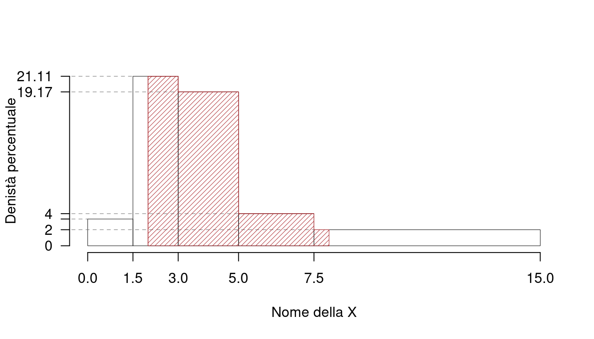
\[\begin{eqnarray*} p &=& 0.45 , \text{essendo }F_{ 3 }= 0.75 > 0.45 \Rightarrow j_{ 0.45 }= 3 \\ x_{ 0.45 } &=& x_{\text{inf}; 3 } + \frac{ { 0.45 } - F_{ 2 }} {f_{ 3 }} \cdot b_{ 3 } \\ &=& 3 + \frac {{ 0.45 } - 0.3667 } { 0.3833 } \cdot 2 \\ &=& 3.435 \end{eqnarray*}\]
\[\begin{eqnarray*} \%(X< 2 ) &=& f_{ 1 }\times 100 +( 2 - 1.5 )\times h_{ 2 } \\ &=& ( 0.05 )\times 100 +( 0.5 )\times 21.11 \\ &=& 0.1556 \times(100) \\ \#(X< 2 ) &\approx& 9 \end{eqnarray*}\]
\[\begin{eqnarray*} \%(X> 2 ) &=& ( 3 - 2 )\times h_{ 2 }+ f_{ 3 }\times 100+f_{ 4 }\times 100+f_{ 5 }\times 100 \\ &=& ( 1 )\times 21.11 + ( 0.3833 )\times 100+( 0.1 )\times 100+( 0.15 )\times 100 \\ &=& 0.8444 \times(100)\\ \#(X> 2 ) &\approx& 51 \end{eqnarray*}\]
\[\begin{eqnarray*} \%(X> 8 ) &=&( 15 - 8 )\times h_1 \\ &=& 7 \times 2 \\ &=& 0.14 \times(100)\\ \#(X> 8 ) &\approx& 8 \end{eqnarray*}\]
\[\begin{eqnarray*} \%(2<X<8) &=& (3-2)\times h_{2}+ f_{ 3 }\times 100+f_{ 4 }\times 100 + (8-7.5)\times h_{5} \\ &=& (1)\times 21.1111+ ( 0.3833 )\times 100+( 0.1 )\times 100 + (0.5)\times 2 \\ &=& 0.7044 \times(100)\\ \#( 2 < X < 8 ) &\approx& 42 \end{eqnarray*}\]
\[ \mu =\frac 1{ 4 }( 1+2+3+4 )= 2.5 \]
\[ \sigma^2 =\frac 1{ 4 }( 1^2+2^2+3^2+4^2 )-( 2.5 )^2= 1.25 \]
\[\begin{eqnarray*} \mu &=& \frac 1{ 4 }( 1 + 2 + 3 + 4 )= 2.5 \\ \sigma^2 &=& \frac 1{ 4 }( 1 ^2+ 2 ^2+ 3 ^2+ 4 ^2 )-( 2.5 )^2= 1.25 \end{eqnarray*}\]
\[\begin{eqnarray*} \mu &=& 1 \cdot 0.1667+ 2 \cdot 0.3333+ 3 \cdot 0.4167+ 4 \cdot 0.0833 = 2.417 \\ \sigma^2 &=&( 1 ^2 \cdot 0.1667+ 2 ^2 \cdot 0.3333+ 3 ^2 \cdot 0.4167+ 4 ^2 \cdot 0.0833 )-( 29 )^2= 0.7431 \end{eqnarray*}\]
\[\begin{eqnarray*} \mu &=& E(X_i) = \sum_{x\in S_X}x P(X=x)\\ &=& 1 \frac { 2 }{ 12 }+ 2 \frac { 4 }{ 12 }+ 3 \frac { 5 }{ 12 }+ 4 \frac { 1 }{ 12 } \\ &=& 2.417 \\ \sigma^2 &=& V(X_i) = \sum_{x\in S_X}x^2 P(X=x)-\mu^2\\ &=&\left( 1 ^2\frac { 2 }{ 12 }+ 2 ^2\frac { 4 }{ 12 }+ 3 ^2\frac { 5 }{ 12 }+ 4 ^2\frac { 1 }{ 12 } \right)-( 2.417 )^2\\ &=& 0.7431 \end{eqnarray*}\]
24.2 Probabilità
24.2.1 Tavole della somma
# Somma di due dadi
c1 <- 6
c2 <- 6
re1 <- (two_way(S_1 = 1:c1,S_2 = 1:c2,
num1 = rep(1,times=c1),num2 = rep(1,times=c2),
size = "\\footnotesize"))\[ \begin{array}{ r|rrrrrrrrrrrr } & 1 ;&\color{blue}{ \frac{ 1 } { 6 }} & 2 ;&\color{blue}{ \frac{ 1 } { 6 }} & 3 ;&\color{blue}{ \frac{ 1 } { 6 }} & 4 ;&\color{blue}{ \frac{ 1 } { 6 }} & 5 ;&\color{blue}{ \frac{ 1 } { 6 }} & 6 ;&\color{blue}{ \frac{ 1 } { 6 }} \\ \hline 1 ;\color{blue}{ 1 / 6 }& 2;&\color{red}{\frac{1}{36}}& 3;&\color{red}{\frac{1}{36}}& 4;&\color{red}{\frac{1}{36}}& 5;&\color{red}{\frac{1}{36}}& 6;&\color{red}{\frac{1}{36}}& 7;&\color{red}{\frac{1}{36}}\\ 2 ;\color{blue}{ 1 / 6 }& 3;&\color{red}{\frac{1}{36}}& 4;&\color{red}{\frac{1}{36}}& 5;&\color{red}{\frac{1}{36}}& 6;&\color{red}{\frac{1}{36}}& 7;&\color{red}{\frac{1}{36}}& 8;&\color{red}{\frac{1}{36}}\\ 3 ;\color{blue}{ 1 / 6 }& 4;&\color{red}{\frac{1}{36}}& 5;&\color{red}{\frac{1}{36}}& 6;&\color{red}{\frac{1}{36}}& 7;&\color{red}{\frac{1}{36}}& 8;&\color{red}{\frac{1}{36}}& 9;&\color{red}{\frac{1}{36}}\\ 4 ;\color{blue}{ 1 / 6 }& 5;&\color{red}{\frac{1}{36}}& 6;&\color{red}{\frac{1}{36}}& 7;&\color{red}{\frac{1}{36}}& 8;&\color{red}{\frac{1}{36}}& 9;&\color{red}{\frac{1}{36}}& 10;&\color{red}{\frac{1}{36}}\\ 5 ;\color{blue}{ 1 / 6 }& 6;&\color{red}{\frac{1}{36}}& 7;&\color{red}{\frac{1}{36}}& 8;&\color{red}{\frac{1}{36}}& 9;&\color{red}{\frac{1}{36}}& 10;&\color{red}{\frac{1}{36}}& 11;&\color{red}{\frac{1}{36}}\\ 6 ;\color{blue}{ 1 / 6 }& 7;&\color{red}{\frac{1}{36}}& 8;&\color{red}{\frac{1}{36}}& 9;&\color{red}{\frac{1}{36}}& 10;&\color{red}{\frac{1}{36}}& 11;&\color{red}{\frac{1}{36}}& 12;&\color{red}{\frac{1}{36}}\\ \end{array} \]
E ricaviamo la distribuzione di, X
\[ \begin{array}{ r|rrrrrrrrrrr } X & 2& 3& 4& 5& 6& 7& 8& 9& 10& 11& 12 \\ \hline P( X ) & \frac{1}{36}& \frac{2}{36}& \frac{3}{36}& \frac{4}{36}& \frac{5}{36}& \frac{6}{36}& \frac{5}{36}& \frac{4}{36}& \frac{3}{36}& \frac{2}{36}& \frac{1}{36} \\ \end{array} \] Calcoliamo valore atteso e varianza
\[\begin{eqnarray*} \mu &=& E(X_i) = \sum_{x\in S_X}x P(X=x)\\ &=& 2 \frac { 1 }{ 36 }+ 3 \frac { 2 }{ 36 }+ 4 \frac { 3 }{ 36 }+ 5 \frac { 4 }{ 36 }+ 6 \frac { 5 }{ 36 }+ 7 \frac { 6 }{ 36 }+ 8 \frac { 5 }{ 36 }+ 9 \frac { 4 }{ 36 }+ 10 \frac { 3 }{ 36 }+ 11 \frac { 2 }{ 36 }+ 12 \frac { 1 }{ 36 } \\ &=& 7 \\ \sigma^2 &=& V(X_i) = \sum_{x\in S_X}x^2 P(X=x)-\mu^2\\ &=&\left( 2 ^2\frac { 1 }{ 36 }+ 3 ^2\frac { 2 }{ 36 }+ 4 ^2\frac { 3 }{ 36 }+ 5 ^2\frac { 4 }{ 36 }+ 6 ^2\frac { 5 }{ 36 }+ 7 ^2\frac { 6 }{ 36 }+ 8 ^2\frac { 5 }{ 36 }+ 9 ^2\frac { 4 }{ 36 }+ 10 ^2\frac { 3 }{ 36 }+ 11 ^2\frac { 2 }{ 36 }+ 12 ^2\frac { 1 }{ 36 } \right)-( 7 )^2\\ &=& 5.833 \end{eqnarray*}\]
# Differenza di due dadi
res<-two_way(S_1 = 1:c1,S_2 = 1:c2,size = "\\footnotesize",
num1 = numeric(c1)+1,num2 = numeric(c2)+1,op = `-`)\[ \begin{array}{ r|rrrrrrrrrrrr } & 1 ;&\color{blue}{ \frac{ 1 } { 6 }} & 2 ;&\color{blue}{ \frac{ 1 } { 6 }} & 3 ;&\color{blue}{ \frac{ 1 } { 6 }} & 4 ;&\color{blue}{ \frac{ 1 } { 6 }} & 5 ;&\color{blue}{ \frac{ 1 } { 6 }} & 6 ;&\color{blue}{ \frac{ 1 } { 6 }} \\ \hline 1 ;\color{blue}{ 1 / 6 }& 0;&\color{red}{\frac{1}{36}}& -1;&\color{red}{\frac{1}{36}}& -2;&\color{red}{\frac{1}{36}}& -3;&\color{red}{\frac{1}{36}}& -4;&\color{red}{\frac{1}{36}}& -5;&\color{red}{\frac{1}{36}}\\ 2 ;\color{blue}{ 1 / 6 }& 1;&\color{red}{\frac{1}{36}}& 0;&\color{red}{\frac{1}{36}}& -1;&\color{red}{\frac{1}{36}}& -2;&\color{red}{\frac{1}{36}}& -3;&\color{red}{\frac{1}{36}}& -4;&\color{red}{\frac{1}{36}}\\ 3 ;\color{blue}{ 1 / 6 }& 2;&\color{red}{\frac{1}{36}}& 1;&\color{red}{\frac{1}{36}}& 0;&\color{red}{\frac{1}{36}}& -1;&\color{red}{\frac{1}{36}}& -2;&\color{red}{\frac{1}{36}}& -3;&\color{red}{\frac{1}{36}}\\ 4 ;\color{blue}{ 1 / 6 }& 3;&\color{red}{\frac{1}{36}}& 2;&\color{red}{\frac{1}{36}}& 1;&\color{red}{\frac{1}{36}}& 0;&\color{red}{\frac{1}{36}}& -1;&\color{red}{\frac{1}{36}}& -2;&\color{red}{\frac{1}{36}}\\ 5 ;\color{blue}{ 1 / 6 }& 4;&\color{red}{\frac{1}{36}}& 3;&\color{red}{\frac{1}{36}}& 2;&\color{red}{\frac{1}{36}}& 1;&\color{red}{\frac{1}{36}}& 0;&\color{red}{\frac{1}{36}}& -1;&\color{red}{\frac{1}{36}}\\ 6 ;\color{blue}{ 1 / 6 }& 5;&\color{red}{\frac{1}{36}}& 4;&\color{red}{\frac{1}{36}}& 3;&\color{red}{\frac{1}{36}}& 2;&\color{red}{\frac{1}{36}}& 1;&\color{red}{\frac{1}{36}}& 0;&\color{red}{\frac{1}{36}}\\ \end{array} \]
E ricaviamo la distribuzione di, X
\[ \begin{array}{ r|rrrrrrrrrrr } X & -5& -4& -3& -2& -1& 0& 1& 2& 3& 4& 5 \\ \hline P( X ) & \frac{1}{36}& \frac{2}{36}& \frac{3}{36}& \frac{4}{36}& \frac{5}{36}& \frac{6}{36}& \frac{5}{36}& \frac{4}{36}& \frac{3}{36}& \frac{2}{36}& \frac{1}{36} \\ \end{array} \] Calcoliamo valore atteso e varianza
\[\begin{eqnarray*} \mu &=& E(X_i) = \sum_{x\in S_X}x P(X=x)\\ &=& ( -5 ) \frac { 1 }{ 36 }+( -4 ) \frac { 2 }{ 36 }+( -3 ) \frac { 3 }{ 36 }+( -2 ) \frac { 4 }{ 36 }+( -1 ) \frac { 5 }{ 36 }+ 0 \frac { 6 }{ 36 }+ 1 \frac { 5 }{ 36 }+ 2 \frac { 4 }{ 36 }+ 3 \frac { 3 }{ 36 }+ 4 \frac { 2 }{ 36 }+ 5 \frac { 1 }{ 36 } \\ &=& 0 \\ \sigma^2 &=& V(X_i) = \sum_{x\in S_X}x^2 P(X=x)-\mu^2\\ &=&\left( ( -5 ) ^2\frac { 1 }{ 36 }+( -4 ) ^2\frac { 2 }{ 36 }+( -3 ) ^2\frac { 3 }{ 36 }+( -2 ) ^2\frac { 4 }{ 36 }+( -1 ) ^2\frac { 5 }{ 36 }+ 0 ^2\frac { 6 }{ 36 }+ 1 ^2\frac { 5 }{ 36 }+ 2 ^2\frac { 4 }{ 36 }+ 3 ^2\frac { 3 }{ 36 }+ 4 ^2\frac { 2 }{ 36 }+ 5 ^2\frac { 1 }{ 36 } \right)-( 0 )^2\\ &=& 5.833 \end{eqnarray*}\]
[1] -5 -4 -3 -2 -1 0 1 2 3 4 5
[1] “S_3” “num3” “den3” “urn”
24.2.2 Binomiale
\[\begin{eqnarray*} P( X \leq 2 ) &=& \binom{ 5 }{ 0 } 0.34 ^{ 0 }(1- 0.34 )^{ 5 - 0 }+\binom{ 5 }{ 1 } 0.34 ^{ 1 }(1- 0.34 )^{ 5 - 1 }+\binom{ 5 }{ 2 } 0.34 ^{ 2 }(1- 0.34 )^{ 5 - 2 } \\ &=& 0.1252+0.3226+0.3323 \\ &=& 0.7801 \end{eqnarray*}\]
\[\begin{eqnarray*} P( X \geq 4 ) &=& \binom{ 5 }{ 4 } 0.34 ^{ 4 }(1- 0.34 )^{ 5 - 4 }+\binom{ 5 }{ 5 } 0.34 ^{ 5 }(1- 0.34 )^{ 5 - 5 } \\ &=& 0.0441+0.0045 \\ &=& 0.0486 \end{eqnarray*}\]
\[\begin{eqnarray*} P( X \leq 2 ) &=& 1-P( X > 2 ) \\ &=& 1-\left( \binom{ 5 }{ 3 } 0.34 ^{ 3 }(1- 0.34 )^{ 5 - 3 }+\binom{ 5 }{ 4 } 0.34 ^{ 4 }(1- 0.34 )^{ 5 - 4 }+\binom{ 5 }{ 5 } 0.34 ^{ 5 }(1- 0.34 )^{ 5 - 5 } \right)\\ &=& 1-( 0.1712+0.0441+0.0045 )\\ &=& 1- 0.2198 \\ &=& 0.7802 \end{eqnarray*}\]
\[\begin{eqnarray*} P( X = 2 ) &=& \binom{ 5 }{ 2 } 0.34 ^{ 2 }(1- 0.34 )^{ 5 - 2 } \\ &=& 10 \times 0.34 ^{ 2 }(1- 0.34 )^{ 3 } \\ &=& 0.3323 \end{eqnarray*}\]
24.2.3 Poisson
\[\begin{eqnarray*} P( X \leq 2 ) &=& \frac{ 1.5 ^{ 0 }}{ 0 !}e^{- 1.5 }+\frac{ 1.5 ^{ 1 }}{ 1 !}e^{- 1.5 }+\frac{ 1.5 ^{ 2 }}{ 2 !}e^{- 1.5 } \\ &=& 0.2231+0.3347+0.251 \\ &=& 0.8088 \end{eqnarray*}\]
\[\begin{eqnarray*} P( X \geq 2 ) &=& 1-P( X < 2 ) \\ &=& 1-\left( \frac{ 1.5 ^{ 0 }}{ 0 !}e^{- 1.5 }+\frac{ 1.5 ^{ 1 }}{ 1 !}e^{- 1.5 } \right)\\ &=& 1-( 0.2231+0.3347 )\\ &=& 1- 0.5578 \\ &=& 0.4422 \end{eqnarray*}\]
\[\begin{eqnarray*} P( X = 2 ) &=& \frac{ 1.5 ^{ 2 }}{ 2 !}e^{- 1.5 }\\ &=& 1.125 \times 0.2231 \\ &=& 0.251 \end{eqnarray*}\]
24.2.4 Normale
norm_int(x1 = 1,verso = "<",mm = 3,ss = 2.2,vnam = "\\theta",
mu = "\\mu_\\theta",sigma = "\\sigma_\\theta")\[\begin{eqnarray*} P( \theta < 1 ) &=& P\left( \frac { \theta - \mu_\theta }{ \sigma_\theta } < \frac { 1 - 3 }{\sqrt{ 2.2 }} \right) \\ &=& P\left( Z < -1.35 \right) \\ &=& 1-\Phi( 1.35 ) \\ &=& 0.0885 \end{eqnarray*}\]
\[\begin{eqnarray*} P( X < 4 ) &=& P\left( \frac { X - \psi }{ \tau } < \frac { 4 - 3 }{\sqrt{ 2.2 }} \right) \\ &=& P\left( Z < 0.67 \right) \\ &=& \Phi( 0.67 ) \\ &=& 0.7486 \end{eqnarray*}\]
\[\begin{eqnarray*} P( Y > 1 ) &=& P\left( \frac { Y - \mu_Y }{ \sigma_Y } > \frac { 1 - 3 }{\sqrt{ 2.2 }} \right) \\ &=& P\left( Z > -1.35 \right) \\ &=& 1-P(Z< -1.35 )\\ &=& 1-(1-\Phi( 1.35 )) \\ &=& 0.9115 \end{eqnarray*}\]
\[\begin{eqnarray*} P( X > 4 ) &=& P\left( \frac { X - \mu }{ \sigma } > \frac { 4 - 3 }{\sqrt{ 2.2 }} \right) \\ &=& P\left( Z > 0.67 \right) \\ &=& 1-P(Z< 0.67 )\\ &=& 1-\Phi( 0.67 ) \\ &=& 0.2514 \end{eqnarray*}\]
\[\begin{eqnarray*} P( X > 1 ) &=& P\left( \frac { X - \mu }{ \sigma } > \frac { 1 - ( -3 ) }{\sqrt{ 2.2 }} \right) \\ &=& P\left( Z > 2.7 \right) \\ &=& 1-P(Z< 2.7 )\\ &=& 1-\Phi( 2.7 ) \\ &=& 0.0035 \end{eqnarray*}\]
\[\begin{eqnarray*} P( 1 < X \leq 2 ) &=& P\left( \frac { 1 - 3 }{\sqrt{ 2.2 }} < \frac { X - \mu }{ \sigma } \leq \frac { 2 - 3 }{\sqrt{ 2.2 }}\right) \\ &=& P\left( -1.35 < Z \leq -0.67 \right) \\ &=& \Phi( -0.67 )-\Phi( -1.35 )\\ &=& (1-\Phi( 0.67 ))-(1-\Phi( 1.35 )) \\ &=& (1- 0.7486 )-(1- 0.9115 ) \\ &=& 0.1629 \end{eqnarray*}\]
\[\begin{eqnarray*} P( 1 < X \leq 2 ) &=& P\left( \frac { 1 - ( -3 ) }{\sqrt{ 2.2 }} < \frac { X - \mu }{ \sigma } \leq \frac { 2 - ( -3 ) }{\sqrt{ 2.2 }}\right) \\ &=& P\left( 2.7 < Z \leq 3.37 \right) \\ &=& \Phi( 3.37 )-\Phi( 2.7 )\\ &=& 0.9996 - 0.9965 \\ &=& 0.0031 \end{eqnarray*}\]
\[\begin{eqnarray*} P( -1 < X \leq 2 ) &=& P\left( \frac { -1 - ( -3 ) }{\sqrt{ 2.2 }} < \frac { X - \mu }{ \sigma } \leq \frac { 2 - ( -3 ) }{\sqrt{ 2.2 }}\right) \\ &=& P\left( 1.35 < Z \leq 3.37 \right) \\ &=& \Phi( 3.37 )-\Phi( 1.35 )\\ &=& 0.9996 - 0.9115 \\ &=& 0.0881 \end{eqnarray*}\]
24.2.5 TLC
Teorema del Limite Centrale (somma VC qualunque)
Siano \(X_1\),…,\(X_n\), \(n=100\) VC IID, tc \(E(X_i)=\mu=1\) e \(V(X_i)=\sigma^2=1,\forall i\), posto: \[ S_n = X_1 + ... + X_n \] allora:\[\begin{eqnarray*} S_n & \mathop{\sim}\limits_{a}& N(n\mu,n\sigma^2) \\ &\sim & N(100\cdot1,100\cdot1) \\ &\sim & N(100,100) \end{eqnarray*}\]\[\begin{eqnarray*} P( 90 < S_n \leq 110 ) &=& P\left( \frac { 90 - 100 }{\sqrt{ 100 }} < \frac { S_n - n\mu }{ \sqrt{n\sigma^2} } \leq \frac { 110 - 100 }{\sqrt{ 100 }}\right) \\ &=& P\left( -1 < Z \leq 1 \right) \\ &=& \Phi( 1 )-\Phi( -1 )\\ &=& \Phi( 1 )-(1-\Phi( 1 )) \\ &=& 0.8413 -(1- 0.8413 ) \\ &=& 0.6826 \end{eqnarray*}\]
Teorema del Limite Centrale (media VC qualunque)
Siano \(X_1\),…,\(X_n\), \(n=100\) VC IID, tc \(E(X_i)=\mu=10\) e \(V(X_i)=\sigma^2=1,\forall i\), posto: \[ \bar X=\frac{S_n}n =\frac{X_1 + ... + X_n}n \] allora:\[\begin{eqnarray*} \bar X & \mathop{\sim}\limits_{a}& N(\mu,\sigma^2/n) \\ &\sim & N\left(10,\frac{1}{100}\right) \\ &\sim & N(10,0.01) \end{eqnarray*}\]\[\begin{eqnarray*} P( 9 < \bar X \leq 11 ) &=& P\left( \frac { 9 - 10 }{\sqrt{ 0.01 }} < \frac { \bar X - \mu }{ \sqrt{\sigma^2/n} } \leq \frac { 11 - 10 }{\sqrt{ 0.01 }}\right) \\ &=& P\left( -10 < Z \leq 10 \right) \\ &=& \Phi( 10 )-\Phi( -10 )\\ &=& \Phi( 10 )-(1-\Phi( 10 )) \\ &=& 1 -(1- 1 ) \\ &=& 1 \end{eqnarray*}\]
Teorema del Limite Centrale (proporzione)
Siano \(X_1\),…,\(X_n\), \(n=50\) VC IID, tc \(X_i\sim\text{Ber}(\pi=0.2)\)\(,\forall i\), posto: \[ \hat\pi=\frac{S_n}n = \frac{X_1 + ... + X_n}n \] allora:\[\begin{eqnarray*} \hat\pi & \mathop{\sim}\limits_{a}& N(\pi,\pi(1-\pi)/n) \\ &\sim & N\left(0.2,\frac{0.2\cdot(1-0.2)}{50}\right) \\ &\sim & N(0.2,0.0032) \end{eqnarray*}\]\[\begin{eqnarray*} P( \hat\pi > 0.1 ) &=& P\left( \frac { \hat\pi - \pi }{ \sqrt{\pi(1-\pi)/n} } > \frac { 0.1 - 0.2 }{\sqrt{ 0.0032 }} \right) \\ &=& P\left( Z > -1.77 \right) \\ &=& 1-P(Z< -1.77 )\\ &=& 1-(1-\Phi( 1.77 )) \\ &=& 0.9616 \end{eqnarray*}\]
24.3 Inferenza
24.3.1 Intervalli di Confidenza
\(1-\alpha =0.95\) e quindi \(\alpha=0.05\rightarrow \alpha/2=0.025\)
\[\begin{eqnarray*} Idc: & & \hat\mu \pm z_{\alpha/2} \times \frac{ \sigma }{\sqrt{n}} \\ & & 10 \pm 1.96 \times \frac{ 1.1 }{\sqrt{ 15 }} \\ & & 10 \pm 1.96 \times 0.284 \\ & & [ 9.443 , 10.56 ] \end{eqnarray*}\]
\(1-\alpha =0.95\) e quindi \(\alpha=0.05\rightarrow \alpha/2=0.025\)
\[ S =\sqrt{\frac {n}{n-1}}\cdot\hat\sigma = \sqrt{\frac { 15 }{ 14 }}\cdot 1.1 = 1.1386 \] \[\begin{eqnarray*} Idc: & & \hat\mu \pm t_{n-1;\alpha/2} \times \frac{S}{\sqrt{n}} \\ & & 10 \pm 2.145 \times \frac{ 1.1386 }{\sqrt{ 15 }} \\ & & 10 \pm 2.145 \times 0.294 \\ & & [ 9.369 , 10.63 ] \end{eqnarray*}\]
\(1-\alpha =0.95\) e quindi \(\alpha=0.05\rightarrow \alpha/2=0.025\)
\[ \hat\pi = \frac{S_n}n = \frac{ 10 }{ 15 }= 0.6667 \]
\[\begin{eqnarray*} Idc: & & \hat\pi \pm z_{\alpha/2} \times \sqrt{\frac{\hat\pi(1-\hat\pi)}{n}} \\ & & 0.6667 \pm 1.96 \times \sqrt{\frac{ 0.6667 (1- 0.6667 )}{ 15 }} \\ & & 0.6667 \pm 1.96 \times 0.1217 \\ & & [ 0.4281 , 0.9052 ] \end{eqnarray*}\]
\(1-\alpha =0.95\) e quindi \(\alpha=0.05\rightarrow \alpha/2=0.025\)
\[\begin{eqnarray*} Idc: & & \lambda \pm z_{\alpha/2} \times \frac{ \sqrt\lambda }{\sqrt{n}} \\ & & 7.4 \pm 1.96 \times \frac{ 2.72029410174709 }{\sqrt{ 75 }} \\ & & 7.4 \pm 1.96 \times 0.3141 \\ & & [ 6.784 , 8.016 ] \end{eqnarray*}\]
24.3.2 Test
Test \(Z\) per una media, variazna nota
\(\fbox{A}\) FORMULAZIONE DELLE IPOTESI
\[\begin{cases} H_0: \mu = \mu_0=1 \\ H_1: \mu \neq \mu_0=1 \end{cases}\]
\(\fbox{B}\) SCELTA E CALCOLO STATISTICA-TEST, \(Z\)
\(\sigma^{2}\) di \(\cal{P}\) è nota: \(\Rightarrow\) z-Test.
\[\begin{eqnarray*} \frac{\hat\mu - \mu_{0}} {\sigma/\sqrt{n}}&\sim&N(0,1)\\ z_{\text{obs}} &=& \frac{ ( 0 - 1 )} { 1 /\sqrt{ 10 }} = -3.162 \, . \end{eqnarray*}\]
\(\fbox{C}\) CONCLUSIONE
La siginficatitività è \(\alpha=0.05\), dalle tavole osserviamo \(z_{0.025}=1.96\).
Essendo \(|z_\text{obs}|=3.1623>z_{0.025}=1.96\) allora rifiuto \(H_0\) al 5%.
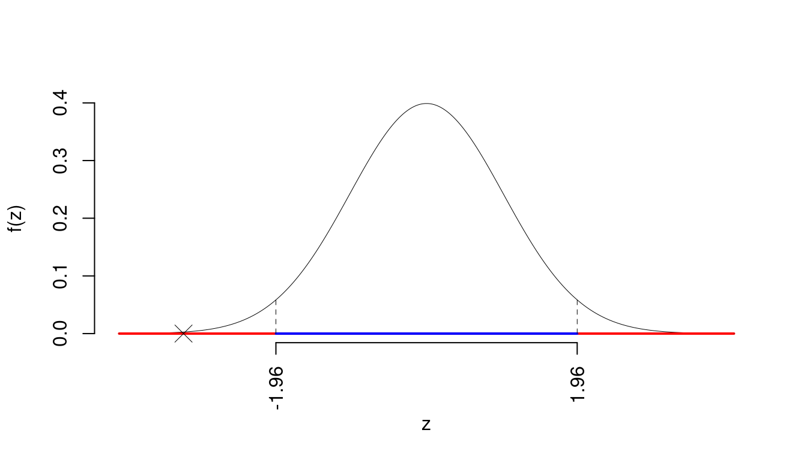
Il \(p_{\text{value}}\) è
\[ p_{\text{value}} = P(|Z|>|-3.16|)=2P(Z>3.16)=0.001565 \]
\[ 0.001 < p_\text{value}= 0.001565 \leq 0.01 \]
Test \(Z\) per una media, variazna nota
\(\fbox{A}\) FORMULAZIONE DELLE IPOTESI
\[\begin{cases} H_0: \mu = \mu_0=1 \\ H_1: \mu \neq \mu_0=1 \end{cases}\]
\(\fbox{B}\) SCELTA E CALCOLO STATISTICA-TEST, \(Z\)
\(\sigma^{2}\) di \(\cal{P}\) è nota: \(\Rightarrow\) z-Test.
\[\begin{eqnarray*} \frac{\hat\mu - \mu_{0}} {\sigma/\sqrt{n}}&\sim&N(0,1)\\ z_{\text{obs}} &=& \frac{ ( 0 - 1 )} { 1 /\sqrt{ 10 }} = -3.162 \, . \end{eqnarray*}\]
\(\fbox{C}\) CONCLUSIONE
Siccome \(H_1\) è bilaterale, considereremo \(\alpha/2\), anziché \(\alpha\)
\(\alpha=0.1, 0.05, 0.01, 0.001\) e quindi \(\alpha/2=0.05, 0.025, 0.005, 0.0005\)
I valori critici sono
\(z_{0.05}=1.6449\); \(z_{0.025}=1.96\); \(z_{0.005}=2.5758\); \(z_{0.0005}=3.2905\)
Siccome \(2.5758<|z_\text{obs}|=3.1623<3.2905\), quindi rifiuto \(H_0\) all’1%,
\(0.001<p_\text{value}<0.01\), molto significativo \(\fbox{**}\).
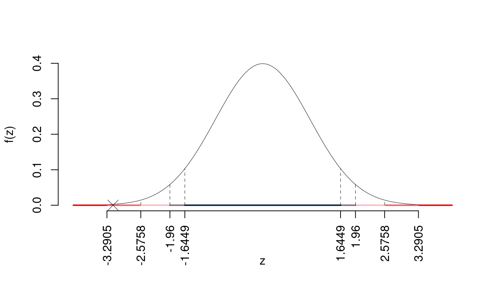
Il \(p_{\text{value}}\) è
\[ p_{\text{value}} = P(|Z|>|-3.16|)=2P(Z>3.16)=0.001565 \]
\[ 0.001 < p_\text{value}= 0.001565 \leq 0.01 \]
Test \(Z\) per una media, variazna nota
\(\fbox{A}\) FORMULAZIONE DELLE IPOTESI
\[\begin{cases} H_0: \mu = \mu_0=1 \\ H_1: \mu \neq \mu_0=1 \end{cases}\]
\(\fbox{B}\) SCELTA E CALCOLO STATISTICA-TEST, \(Z\)
\(\sigma^{2}\) di \(\cal{P}\) è nota: \(\Rightarrow\) z-Test.
\[\begin{eqnarray*} \frac{\hat\mu - \mu_{0}} {\sigma/\sqrt{n}}&\sim&N(0,1)\\ z_{\text{obs}} &=& \frac{ ( 0 - 1 )} { 1 /\sqrt{ 10 }} = -3.162 \, . \end{eqnarray*}\]
\(\fbox{C}\) CONCLUSIONE
Il \(p_{\text{value}}\) è
\[ p_{\text{value}} = P(|Z|>|-3.16|)=2P(Z>3.16)=0.001565 \]
\[ 0.001 < p_\text{value}= 0.001565 \leq 0.01 \]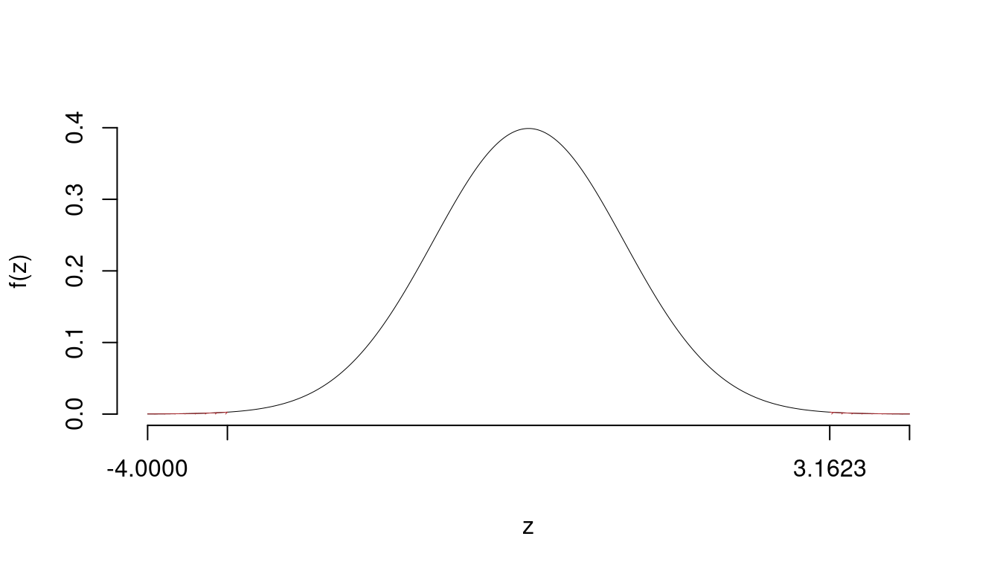
Rifiuto \(H_0\) all’1%,
\(0.001<p_\text{value}<0.01\), molto significativo \(\fbox{**}\).
Test \(t\) per una media, varianza incognita
\(\fbox{A}\) FORMULAZIONE DELLE IPOTESI
\[\begin{cases} H_0: \mu = \mu_0=1 \\ H_1: \mu < \mu_0=1 \end{cases}\]
\[\begin{eqnarray*} S &=& \sqrt{\frac{n} {n-1}}\ \widehat{\sigma} = \sqrt{\frac{ 10 } { 10 -1}} \times 1 = 1.054 \end{eqnarray*}\] \[\begin{eqnarray*} \frac{\hat\mu - \mu_{0}} {S/\,\sqrt{n}}&\sim&t_{n-1}\\ t_{\text{obs}} &=& \frac{ ( 0 - 1 )} { 1.054 /\sqrt{ 10 }} = -3 \, . \end{eqnarray*}\]
\(\fbox{C}\) CONCLUSIONE
La siginficatitività è \(\alpha=0.01\), dalle tavole osserviamo \(t_{10-1;0.01}=-2.8214\).
Essendo \(t_\text{obs}=-3<t_{10-1;0.01}=-2.8214\) allora rifiuto \(H_0\) al 1%.
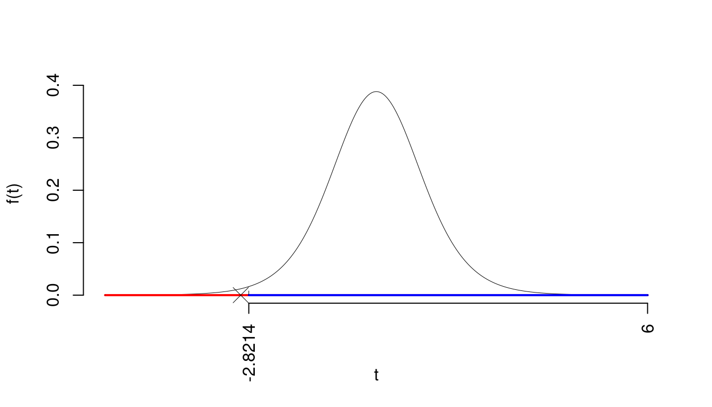
Il \(p_{\text{value}}\) è
\[ p_{\text{value}} = P(T_{10-1}<-3)=0.007478 \]
Attenzione il calcolo del \(p_\text{value}\) con la \(T\) è puramente illustrativo e non può essere riprodotto senza una calcolatrice statistica adeguata.\[ 0.001 < p_\text{value}= 0.007478 \leq 0.01 \]
Test \(t\) per una media, varianza incognita
\(\fbox{A}\) FORMULAZIONE DELLE IPOTESI
\[\begin{cases} H_0: \mu = \mu_0=1 \\ H_1: \mu < \mu_0=1 \end{cases}\]
\[\begin{eqnarray*} S &=& \sqrt{\frac{n} {n-1}}\ \widehat{\sigma} = \sqrt{\frac{ 10 } { 10 -1}} \times 1 = 1.054 \end{eqnarray*}\] \[\begin{eqnarray*} \frac{\hat\mu - \mu_{0}} {S/\,\sqrt{n}}&\sim&t_{n-1}\\ t_{\text{obs}} &=& \frac{ ( 0 - 1 )} { 1.054 /\sqrt{ 10 }} = -3 \, . \end{eqnarray*}\]
\(\fbox{C}\) CONCLUSIONE
Consideriamo \(\alpha=0.1, 0.05, 0.01, 0.001\)
I valori critici sono
\(t_{10-1;0.1}=-1.383\); \(t_{10-1;0.05}=-1.8331\); \(t_{10-1;0.01}=-2.8214\); \(t_{10-1;0.001}=-4.2968\)
Siccome \(-1.8331<t_\text{obs}=-3<-1.383\), quindi rifiuto \(H_0\) all’1%,
\(0.001<p_\text{value}<0.01\), molto significativo \(\fbox{**}\).
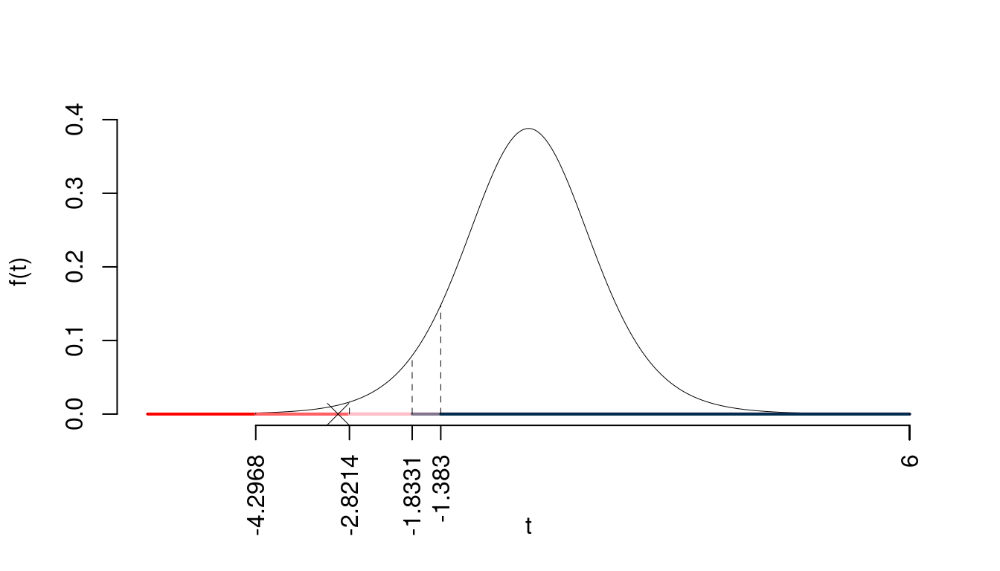
Il \(p_{\text{value}}\) è
\[ p_{\text{value}} = P(T_{10-1}<-3)=0.007478 \]
Attenzione il calcolo del \(p_\text{value}\) con la \(T\) è puramente illustrativo e non può essere riprodotto senza una calcolatrice statistica adeguata.\[ 0.001 < p_\text{value}= 0.007478 \leq 0.01 \]
Test \(t\) per una media, varianza incognita
\(\fbox{A}\) FORMULAZIONE DELLE IPOTESI
\[\begin{cases} H_0: \mu = \mu_0=1cm \\ H_1: \mu < \mu_0=1cm \end{cases}\]
\[\begin{eqnarray*} S &=& \sqrt{\frac{n} {n-1}}\ \widehat{\sigma} = \sqrt{\frac{ 10 } { 10 -1}} \times 1 = 1.054 \end{eqnarray*}\] \[\begin{eqnarray*} \frac{\hat\mu - \mu_{0}} {S/\,\sqrt{n}}&\sim&t_{n-1}\\ t_{\text{obs}} &=& \frac{ ( 0 - 1 )} { 1.054 /\sqrt{ 10 }} = -3 \, . \end{eqnarray*}\]
\(\fbox{C}\) CONCLUSIONE
Il \(p_{\text{value}}\) è
\[ p_{\text{value}} = P(T_{10-1}<-3)=0.007478 \]
Attenzione il calcolo del \(p_\text{value}\) con la \(T\) è puramente illustrativo e non può essere riprodotto senza una calcolatrice statistica adeguata.\[ 0.001 < p_\text{value}= 0.007478 \leq 0.01 \]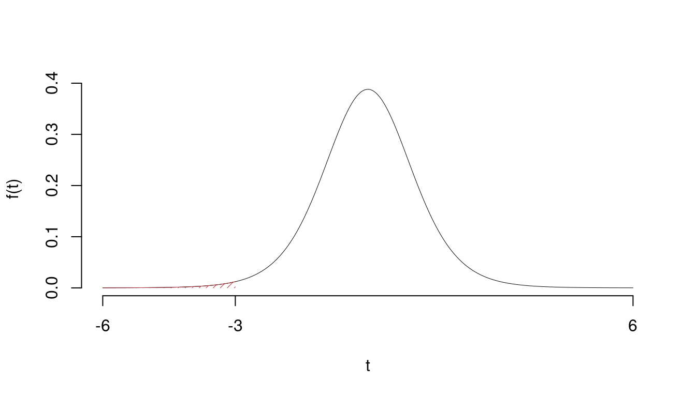
Rifiuto \(H_0\) all’1%,
\(0.001<p_\text{value}<0.01\), molto significativo \(\fbox{**}\).
Test \(Z\) per una proporzione
La stima \[\hat\pi=\frac { 60 } { 100 }= 0.6 \]
\(\fbox{A}\) FORMULAZIONE DELLE IPOTESI
\[\begin{cases} H_0: \pi = \pi_0=0.5 \\ H_1: \pi > \pi_0=0.5 \end{cases}\]
\(\fbox{B}\) SCELTA E CALCOLO STATISTICA-TEST, \(Z\) Test Binomiale per \(n\) grande: \(\Rightarrow\) z-Test.
\[\begin{eqnarray*} \frac{\hat\pi - \pi_{0}} {\sqrt {\pi_0(1-\pi_0)/\,n}}&\sim&N(0,1)\\ z_{\text{obs}} &=& \frac{ ( 0.6 - 0.5 )} {\sqrt{ 0.5 (1- 0.5 )/ 100 }} = 2 \,. \end{eqnarray*}\]
\(\fbox{C}\) CONCLUSIONE
Il \(p_{\text{value}}\) è
\[ p_{\text{value}} = P(Z>2)=0.022750 \]
\[ 0.01 < p_\text{value}= 0.022750 \leq 0.05 \]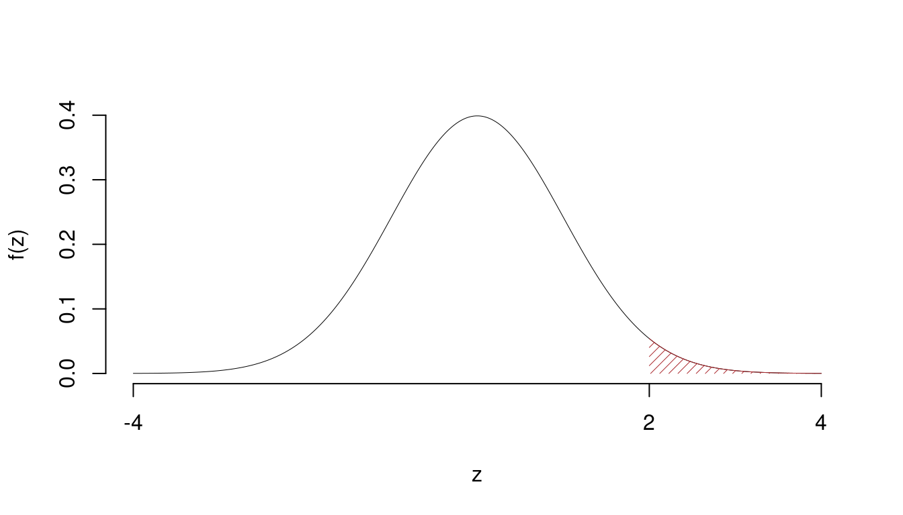
Indecisione sul rifiuto di \(H_0\) al 10%,
\(0.05<p_\text{value}<0.1\), marginalmente significativo \(\fbox{.}\).
Test \(t\) per due medie, (eterogeneità)
\(\fbox{A}\) FORMULAZIONE DELLE IPOTESI
\[\begin{cases} H_0: \mu_\text{A} = \mu_\text{B} \\ H_1: \mu_\text{A} \neq \mu_\text{B} \end{cases}\]
\(\fbox{B}\) SCELTA E CALCOLO STATISTICA-TEST, \(T\) \[ S^2_\text{ A }=\frac{n_\text{ A }}{n_\text{ A }-1}\hat\sigma^2_\text{ A }=\frac{ 10 }{ 10 -1} 1.1 ^2= 1.344 \qquad S^2_\text{ B }=\frac{n_\text{ B }}{n_\text{ B }-1}\hat\sigma^2_\text{ B }=\frac{ 12 }{ 12 -1} 1.2 ^2= 1.571 \]
\[\begin{eqnarray*} \frac{\hat\mu_\text{ A } - \hat\mu_\text{ B }} {\sqrt{\frac {S^2_\text{ A }}{n_\text{ A }}+\frac {S^2_\text{ B }}{n_\text{ B }}}}&\sim&t_{n_\text{ A }+n_\text{ B }-2}\\ t_{\text{obs}} &=& \frac{ ( 11 - 12 )} {\sqrt{\frac{ 1.344 }{ 10 }+\frac{ 1.571 }{ 12 }}} = -1.941 \, . \end{eqnarray*}\]
\(\fbox{C}\) CONCLUSIONE
Siccome \(H_1\) è bilaterale, considereremo \(\alpha/2\), anziché \(\alpha\)
\(\alpha=0.1, 0.05, 0.01, 0.001\) e quindi \(\alpha/2=0.05, 0.025, 0.005, 0.0005\)
I valori critici sono
\(t_{22-2;0.05}=1.7247\); \(t_{22-2;0.025}=2.086\); \(t_{22-2;0.005}=2.8453\); \(t_{22-2;0.0005}=3.8495\)
Siccome \(1.7247<|t_\text{obs}|=1.9413<2.086\), indecisione sul rifiuto di \(H_0\) al 10%,
\(0.05<p_\text{value}<0.1\), marginalmente significativo \(\fbox{.}\).
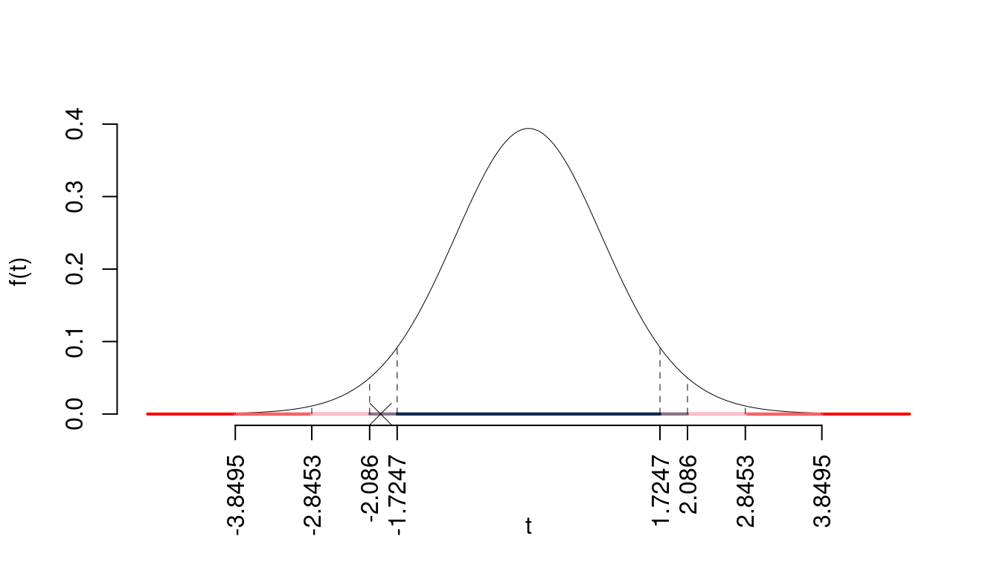
Il \(p_{\text{value}}\) è
\[ p_{\text{value}} = P(|T_{22-2}|>|-1.94|)=2P(T_{22-2}>1.94)=0.066448 \]
Attenzione il calcolo del \(p_\text{value}\) con la \(T\) è puramente illustrativo e non può essere riprodotto senza una calcolatrice statistica adeguata.\[ 0.05 < p_\text{value}= 0.066448 \leq 0.1 \]
Test \(T\) per due medie, (omogeneità)
\(\fbox{A}\) FORMULAZIONE DELLE IPOTESI
\[\begin{cases} H_0: \mu_\text{A} = \mu_\text{B} \\ H_1: \mu_\text{A} \neq \mu_\text{B} \end{cases}\]
\(\fbox{B}\) SCELTA E CALCOLO STATISTICA-TEST, \(T\)
L’ipotesi è di omogeneità e quindi calcoliamo:\[ S_p^2=\frac{n_\text{ A }\hat\sigma^2_\text{ A }+n_\text{ B }\hat\sigma^2_\text{ B }}{n_\text{ A }+n_\text{ B }-2} = \frac{ 10 \cdot 1.1 ^2+ 12 \cdot 1.2 ^2}{ 10 + 12 -2}= 1.469 \]
\[\begin{eqnarray*} \frac{\hat\mu_\text{ A } - \hat\mu_\text{ B }} {\sqrt{\frac {S^2_p}{n_\text{ A }}+\frac {S^2_p}{n_\text{ B }}}}&\sim&t_{n_\text{ A }+n_\text{ B }-2}\\ t_{\text{obs}} &=& \frac{ ( 11 - 12 )} {\sqrt{\frac{ 1.344 }{ 10 }+\frac{ 1.571 }{ 12 }}} = -1.927 \, . \end{eqnarray*}\]
\(\fbox{C}\) CONCLUSIONE
La siginficatitività è \(\alpha=0.05\), dalle tavole osserviamo \(t_{22-2;0.025}=2.086\).
Essendo \(|t_\text{obs}|=1.9269<t_{22-2;0.025}=2.086\) allora non rifiuto \(H_0\) al 5%.
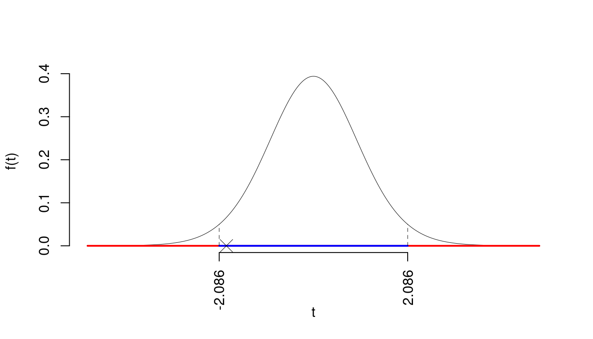
Il \(p_{\text{value}}\) è
\[ p_{\text{value}} = P(|T_{22-2}|>|-1.93|)=2P(T_{22-2}>1.93)=0.068315 \]
Attenzione il calcolo del \(p_\text{value}\) con la \(T\) è puramente illustrativo e non può essere riprodotto senza una calcolatrice statistica adeguata.\[ 0.05 < p_\text{value}= 0.068315 \leq 0.1 \]
Test \(Z\) per due proporzioni
\(\fbox{A}\) FORMULAZIONE DELLE IPOTESI
\[\begin{cases} H_0: \pi_\text{A} = \pi_\text{B} \\ H_1: \pi_\text{A} \neq \pi_\text{B} \end{cases}\]
\(\fbox{B}\) SCELTA E CALCOLO STATISTICA-TEST, \(Z\)
\[\hat\pi_\text{ A }=\frac{s_\text{ A }}{n_\text{ A }}=\frac{ 11 }{ 50 }= 0.22 \qquad \hat\pi_\text{ B }=\frac{s_\text{ B }}{n_\text{ B }}=\frac{ 12 }{ 60 }= 0.2 \]Calcoliamo la proporzione comune sotto \(H_0\) \[ \pi_C=\frac{s_\text{ A }+s_\text{ B }}{n_\text{ A }+n_\text{ B }}= \frac{ 23 }{ 110 }= 0.2091 \]\[\begin{eqnarray*} \frac{\hat\pi_\text{ A } - \hat\pi_\text{ B }} {\sqrt{\frac {\pi_C(1-\pi_C)}{n_\text{ A }}+\frac {\pi_C(1-\pi_C)}{n_\text{ B }}}}&\sim&N(0,1)\\ z_{\text{obs}} &=& \frac{ ( 0.22 - 0.2 )} {\sqrt{\frac{ 0.2091 (1- 0.2091 )}{ 50 }+\frac{ 0.2091 (1- 0.2091 )}{ 60 }}} = 0.2568 \, . \end{eqnarray*}\]
\(\fbox{C}\) CONCLUSIONE
La siginficatitività è \(\alpha=0.05\), dalle tavole osserviamo \(z_{0.025}=1.96\).
Essendo \(|z_\text{obs}|=0.2568<z_{0.025}=1.96\) allora non rifiuto \(H_0\) al 5%.
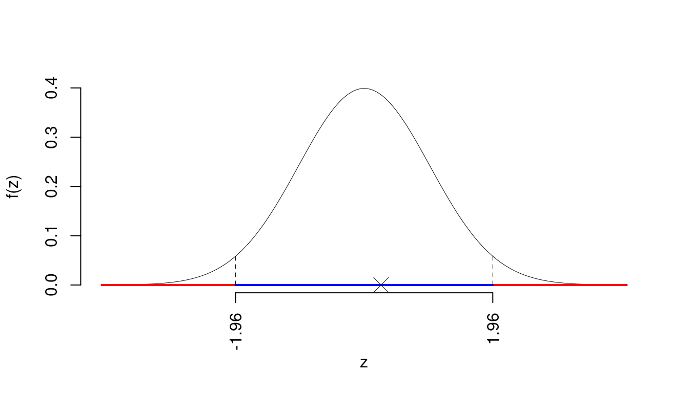
Il \(p_{\text{value}}\) è
\[ p_{\text{value}} = P(|Z|>|0.26|)=2P(Z>0.26)=0.797302 \]
\[ 0.1 < p_\text{value}= 0.797302 \leq 1 \]
Test \(t\) per due medie, (eterogeneità)
\(\fbox{A}\) FORMULAZIONE DELLE IPOTESI
\[\begin{cases} H_0: \mu_\text{A} = \mu_\text{B} \\ H_1: \mu_\text{A} \neq \mu_\text{B} \end{cases}\]
\(\fbox{B}\) SCELTA E CALCOLO STATISTICA-TEST, \(T\) \[ S^2_\text{ 1 }=\frac{n_\text{ 1 }}{n_\text{ 1 }-1}\hat\sigma^2_\text{ 1 }=\frac{ 10 }{ 10 -1} 1.1 ^2= 1.344 \qquad S^2_\text{ 2 }=\frac{n_\text{ 2 }}{n_\text{ 2 }-1}\hat\sigma^2_\text{ 2 }=\frac{ 12 }{ 12 -1} 1.2 ^2= 1.571 \]
\[\begin{eqnarray*} \frac{\hat\mu_\text{ 1 } - \hat\mu_\text{ 2 }} {\sqrt{\frac {S^2_\text{ 1 }}{n_\text{ 1 }}+\frac {S^2_\text{ 2 }}{n_\text{ 2 }}}}&\sim&t_{n_\text{ 1 }+n_\text{ 2 }-2}\\ t_{\text{obs}} &=& \frac{ ( 11 - 12 )} {\sqrt{\frac{ 1.344 }{ 10 }+\frac{ 1.571 }{ 12 }}} = -1.941 \, . \end{eqnarray*}\]
\(\fbox{C}\) CONCLUSIONE
La siginficatitività è \(\alpha=0.05\), dalle tavole osserviamo \(t_{22-2;0.025}=2.086\).
Essendo \(|t_\text{obs}|=1.9413<t_{22-2;0.025}=2.086\) allora non rifiuto \(H_0\) al 5%.
Il \(p_{\text{value}}\) è
\[ p_{\text{value}} = P(|T_{22-2}|>|-1.94|)=2P(T_{22-2}>1.94)=0.066448 \]
Attenzione il calcolo del \(p_\text{value}\) con la \(T\) è puramente illustrativo e non può essere riprodotto senza una calcolatrice statistica adeguata.\[ 0.05 < p_\text{value}= 0.066448 \leq 0.1 \]
Test \(T\) per due medie, (omogeneità)
\(\fbox{A}\) FORMULAZIONE DELLE IPOTESI
\[\begin{cases} H_0: \mu_\text{1} = \mu_\text{2} \\ H_1: \mu_\text{1} \neq \mu_\text{2} \end{cases}\]
\(\fbox{B}\) SCELTA E CALCOLO STATISTICA-TEST, \(T\)
L’ipotesi è di omogeneità e quindi calcoliamo:\[ S_p^2=\frac{n_\text{ 1 }\hat\sigma^2_\text{ 1 }+n_\text{ 2 }\hat\sigma^2_\text{ 2 }}{n_\text{ 1 }+n_\text{ 2 }-2} = \frac{ 10 \cdot 1.1 ^2+ 12 \cdot 1.2 ^2}{ 10 + 12 -2}= 1.469 \]
\[\begin{eqnarray*} \frac{\hat\mu_\text{ 1 } - \hat\mu_\text{ 2 }} {\sqrt{\frac {S^2_p}{n_\text{ 1 }}+\frac {S^2_p}{n_\text{ 2 }}}}&\sim&t_{n_\text{ 1 }+n_\text{ 2 }-2}\\ t_{\text{obs}} &=& \frac{ ( 11 - 12 )} {\sqrt{\frac{ 1.344 }{ 10 }+\frac{ 1.571 }{ 12 }}} = -1.927 \, . \end{eqnarray*}\]
\(\fbox{C}\) CONCLUSIONE
Siccome \(H_1\) è bilaterale, considereremo \(\alpha/2\), anziché \(\alpha\)
\(\alpha=0.1, 0.05, 0.01, 0.001\) e quindi \(\alpha/2=0.05, 0.025, 0.005, 0.0005\)
I valori critici sono
\(t_{22-2;0.05}=1.7247\); \(t_{22-2;0.025}=2.086\); \(t_{22-2;0.005}=2.8453\); \(t_{22-2;0.0005}=3.8495\)
Siccome \(1.7247<|t_\text{obs}|=1.9269<2.086\), indecisione sul rifiuto di \(H_0\) al 10%,
\(0.05<p_\text{value}<0.1\), marginalmente significativo \(\fbox{.}\).
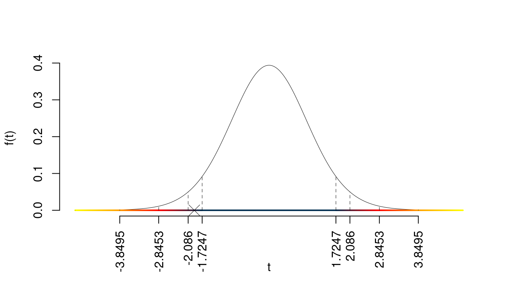
Il \(p_{\text{value}}\) è
\[ p_{\text{value}} = P(|T_{22-2}|>|-1.93|)=2P(T_{22-2}>1.93)=0.068315 \]
Attenzione il calcolo del \(p_\text{value}\) con la \(T\) è puramente illustrativo e non può essere riprodotto senza una calcolatrice statistica adeguata.\[ 0.05 < p_\text{value}= 0.068315 \leq 0.1 \]
Test \(Z\) per due proporzioni
\(\fbox{A}\) FORMULAZIONE DELLE IPOTESI
\[\begin{cases} H_0: \pi_\text{1} = \pi_\text{2} \\ H_1: \pi_\text{1} < \pi_\text{2} \end{cases}\]
\(\fbox{B}\) SCELTA E CALCOLO STATISTICA-TEST, \(Z\)
\[\hat\pi_\text{ 1 }=\frac{s_\text{ 1 }}{n_\text{ 1 }}=\frac{ 120 }{ 250 }= 0.48 \qquad \hat\pi_\text{ 2 }=\frac{s_\text{ 2 }}{n_\text{ 2 }}=\frac{ 130 }{ 260 }= 0.5 \]Calcoliamo la proporzione comune sotto \(H_0\) \[ \pi_C=\frac{s_\text{ 1 }+s_\text{ 2 }}{n_\text{ 1 }+n_\text{ 2 }}= \frac{ 250 }{ 510 }= 0.4902 \]\[\begin{eqnarray*} \frac{\hat\pi_\text{ 1 } - \hat\pi_\text{ 2 }} {\sqrt{\frac {\pi_C(1-\pi_C)}{n_\text{ 1 }}+\frac {\pi_C(1-\pi_C)}{n_\text{ 2 }}}}&\sim&N(0,1)\\ z_{\text{obs}} &=& \frac{ ( 0.48 - 0.5 )} {\sqrt{\frac{ 0.4902 (1- 0.4902 )}{ 250 }+\frac{ 0.4902 (1- 0.4902 )}{ 260 }}} = -0.4517 \, . \end{eqnarray*}\]
\(\fbox{C}\) CONCLUSIONE
Il \(p_{\text{value}}\) è
\[ p_{\text{value}} = P(Z<-0.45)=0.325756 \]
\[ 0.1 < p_\text{value}= 0.325756 \leq 1 \]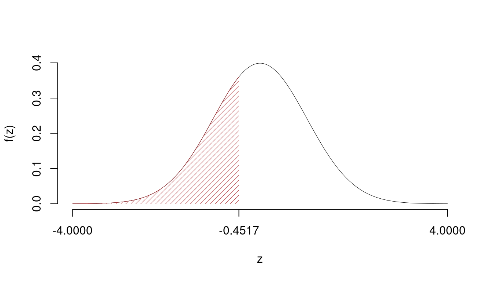
Non rifiuto \(H_0\) a nessun livello di significatività,
\(p_\text{value}>0.1\), non significativo
24.3.3 Regressione
set.seed(12) # ripete le stesse generazioni casuali
n <- 100 # fisso n
x <- rnorm(n,10) # genero x
y <- x+rnorm(n,0,1) # genero y
ls2e(regr(x = x,y = y)) # produco le statistiche di base
calcolo_beta()\[\begin{eqnarray*} \bar x &=&\frac 1 n\sum_{i=1}^n x_i = \frac {1}{ 100 } 996.8831 = 9.969 \\ \bar y &=&\frac 1 n\sum_{i=1}^n y_i = \frac {1}{ 100 } 997.8525 = 9.979 \\ \hat\sigma_X^2&=&\frac 1 n\sum_{i=1}^n x_i^2-\bar x^2=\frac {1}{ 100 } 10012 - 9.9688 ^2= 0.7409 \\ \hat\sigma_Y^2&=&\frac 1 n\sum_{i=1}^n y_i^2-\bar y^2=\frac {1}{ 100 } 10133 - 9.9785 ^2= 1.756 \\ \text{cov}(X,Y)&=&\frac 1 n\sum_{i=1}^n x_i~y_i-\bar x\bar y=\frac {1}{ 100 } 10023 - 9.9688 \cdot 9.9785 = 0.7546 \\ \hat\beta_1 &=& \frac{\text{cov}(X,Y)}{\hat\sigma_X^2} \\ &=& \frac{ 0.7546 }{ 0.7409 } = 1.018 \\ \hat\beta_0 &=& \bar y - \hat\beta_1 \bar x\\ &=& 9.979 - 1.0184 \times 9.9688 = -0.1736 \end{eqnarray*}\]
\[\begin{eqnarray*} \hat\beta_1 &=& \frac{\text{cov}(X,Y)}{\hat\sigma_X^2} \\ &=& \frac{ 0.7546 }{ 0.7409 } = 1.018 \\ \hat\beta_0 &=& \bar y - \hat\beta_1 \bar x\\ &=& 9.979 - 1.0184 \times 9.9688 = -0.1736 \end{eqnarray*}\]
\[\begin{eqnarray*} \hat y_i &=&\hat\beta_0+\hat\beta_1 x_i=\\ &=& -0.1736 + 1.0184 \times 8.7061 = 8.693 \\ \hat \varepsilon_i &=& y_i-\hat y_i\\ &=& 8.178 - 8.693 = -0.5142 \end{eqnarray*}\]
\[\begin{eqnarray*} \hat{\sigma_\varepsilon}^2&=&(1-r^2)\hat\sigma_Y^2\\ &=& (1- 0.4375 )\times 1.756 \\ &=& 0.988 \\ S_\varepsilon^2 &=& \frac{n} {n-2} \hat{\sigma_\varepsilon}^2\\ &=& \frac{ 100 } { 100 -2} \hat{\sigma_\varepsilon}^2 \\ &=& \frac{ 100 } { 100 -2} \times 0.988 = 1.008 \end{eqnarray*}\]
E quindi\[\begin{eqnarray*} V(\hat\beta_{0}) &=& \sigma_{\varepsilon}^{2} \left( \frac{1} {n} + \frac{\bar{x}^{2}} {n \hat{\sigma}^{2}_{X}} \right)\\ \widehat{V(\hat\beta_{0})} &=& S_{\varepsilon}^{2}\left( \frac{1} {n} + \frac{\bar{x}^{2}} {n \hat{\sigma}^{2}_{X}} \right)\ \\ &=& 1.008 \times\left( \frac{1} { 100 } + \frac{ 9.969 ^{2}} { 100 \times 0.7409 } \right)\\ \widehat{SE(\hat\beta_{0})} &=& \sqrt{ 1.362 }\\ &=& 1.167 \end{eqnarray*}\]
\[\begin{eqnarray*} \hat{\sigma_\varepsilon}^2&=&(1-r^2)\hat\sigma_Y^2\\ &=& (1- 0.4375 )\times 1.756 \\ &=& 0.988 \\ S_\varepsilon^2 &=& \frac{n} {n-2} \hat{\sigma_\varepsilon}^2\\ &=& \frac{ 100 } { 100 -2} \hat{\sigma_\varepsilon}^2 \\ &=& \frac{ 100 } { 100 -2} \times 0.988 = 1.008 \end{eqnarray*}\]
E quindi\[\begin{eqnarray*} V(\hat\beta_{1}) &=& \frac{\sigma_{\varepsilon}^{2}} {n \hat{\sigma}^{2}_{X}} \\ \widehat{V(\hat\beta_{1})} &=& \frac{S_{\varepsilon}^{2}} {n \hat{\sigma}^{2}_{X}} \\ &=& \frac{ 1.008 } { 100 \times 0.7409 } = 0.01361 \\ \widehat{SE(\hat\beta_{1})} &=& \sqrt{ 0.01361 }\\ &=& 0.1166 \end{eqnarray*}\]
\(\fbox{A}\) FORMULAZIONE DELLE IPOTESI
\[\begin{cases} H_0: \beta_0 = \beta_{0;H_0}=0 \\ H_1: \beta_0 < \beta_{0;H_0}=0 \end{cases}\]
\(\fbox{B}\) SCELTA E CALCOLO STATISTICA-TEST, \(T\) Test su un coefficiente di regressione: \(\Rightarrow\) t-Test.
\[\begin{eqnarray*} \frac{\hat\beta_{ 0 } - \beta_{ 0 ;H_0}} {\widehat{SE(\hat\beta_{ 0 })}}&\sim&t_{n-2}\\ t_{\text{obs}} &=& \frac{ ( -0.1736 - 0 )} { 1.167 } = -0.1488 \, . \end{eqnarray*}\]
\(\fbox{C}\) CONCLUSIONE
La siginficatitività è \(\alpha=0.01\), dalle tavole osserviamo \(t_{100-2;0.01}=-2.365\).
Essendo \(t_\text{obs}=-0.1488>t_{100-2;0.01}=-2.365\) allora rifiuto \(H_0\) al 1%.
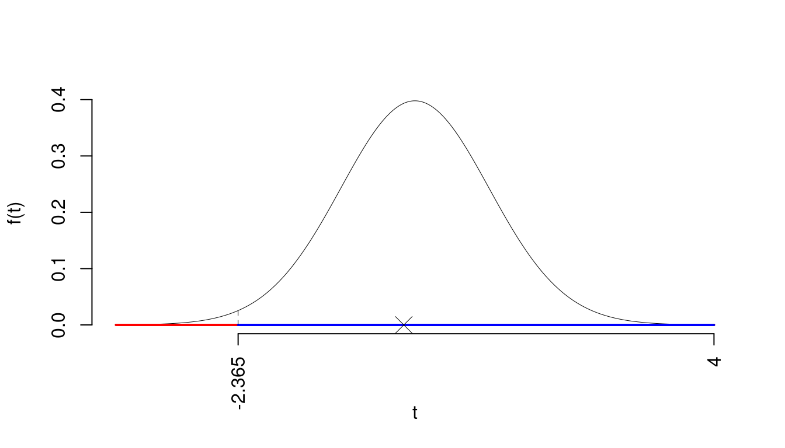
Il \(p_{\text{value}}\) è
\[ p_{\text{value}} = P(T_{100-2}<-0.15)=0.441028 \]
Attenzione il calcolo del \(p_\text{value}\) con la \(T\) è puramente illustrativo e non può essere riprodotto senza una calcolatrice statistica adeguata.\[ 0.1 < p_\text{value}= 0.441028 \leq 1 \]
\(\fbox{A}\) FORMULAZIONE DELLE IPOTESI
\[\begin{cases} H_0: \beta_1 = \beta_{1;H_0}=0 \\ H_1: \beta_1 \neq \beta_{1;H_0}=0 \end{cases}\]
\(\fbox{B}\) SCELTA E CALCOLO STATISTICA-TEST, \(T\) Test su un coefficiente di regressione: \(\Rightarrow\) t-Test.
\[\begin{eqnarray*} \frac{\hat\beta_{ 1 } - \beta_{ 1 ;H_0}} {\widehat{SE(\hat\beta_{ 1 })}}&\sim&t_{n-2}\\ t_{\text{obs}} &=& \frac{ ( 1.018 - 0 )} { 0.1166 } = 8.733 \, . \end{eqnarray*}\]
\(\fbox{C}\) CONCLUSIONE
La siginficatitività è \(\alpha=0.01\), dalle tavole osserviamo \(t_{100-2;0.005}=2.6269\).
Essendo \(|t_\text{obs}|=8.7327>t_{100-2;0.005}=2.6269\) allora rifiuto \(H_0\) al 1%.
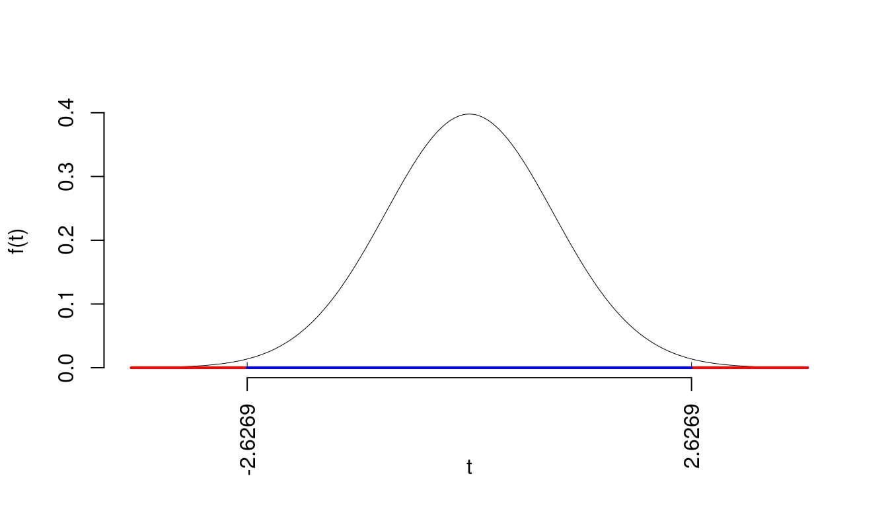
Il \(p_{\text{value}}\) è
\[ p_{\text{value}} = P(|T_{100-2}|>|8.73|)=2P(T_{100-2}>8.73)=7e-14 \]
Attenzione il calcolo del \(p_\text{value}\) con la \(T\) è puramente illustrativo e non può essere riprodotto senza una calcolatrice statistica adeguata.\[ 0 < p_\text{value}= 7e-14 \leq 0.001 \]
24.4 Esempi
24.4.0.1 Esercizio 1
```{r 25-test-functions-12,, echo=FALSE}
set.seed(1) # per ottenere sempre la stessa simulazione
n <- 250 # ampiezza campionaria
brk <- c(0,15,30,50,100,250) # intervalli (breaks)
hhh <- c( 20,120,100, 50,10) # aspetto presunto istogramma
nomex <- "Spesa"
samp <- genera_dati(brk = brk,hhh = hhh,n = n)
ls2e(stat_base(samp,brk)) # crea il data set e la tabella dat3
```
Su un campione di $`r n`$ famiglie della provincia di Modena è stato
rilevata la spesa mensile in telecomunicazioni (in euro), qui di seguito la
distribuzione delle frequenze relative:
```{r 25-test-functions-13,, echo=FALSE}
kable(dat3[,c(1,2,4)]) %>%
kable_styling(full_width = F)
```
1.a (**Punti 14**) Disegnare l'istogramma di densità
percentuale.
**Soluzione**
```{r 25-test-functions-14,, echo=FALSE}
kable(dat3) %>% # Stampa la tabella
kable_styling(full_width = F)
histp(axes = T)
h.int(60,250,density=20)
```
1.b (**Punti 3**) Qual è la percentuale di famiglie con
spesa superiore a 60 euro?
**Soluzione**
```{r 25-test-functions-15,, echo=FALSE}
F_print(60,verso=">")
```Su un campione di \(250\) famiglie della provincia di Modena è stato rilevata la spesa mensile in telecomunicazioni (in euro), qui di seguito la distribuzione delle frequenze relative:
| \([\text{x}_j,\) | \(\text{x}_{j+1})\) | \(f_j\) |
|---|---|---|
| 0 | 15 | 0.036 |
| 15 | 30 | 0.224 |
| 30 | 50 | 0.248 |
| 50 | 100 | 0.308 |
| 100 | 250 | 0.184 |
| 1.000 |
1.a (Punti 14) Disegnare l’istogramma di densità percentuale.
Soluzione
| \([\text{x}_j,\) | \(\text{x}_{j+1})\) | \(n_j\) | \(f_j\) | \(b_j\) | \(h_j\) | \(F_j\) | \(f_{j\%}\) |
|---|---|---|---|---|---|---|---|
| 0 | 15 | 9 | 0.036 | 15 | 0.2400 | 0.036 | 3.6 |
| 15 | 30 | 56 | 0.224 | 15 | 1.4933 | 0.260 | 22.4 |
| 30 | 50 | 62 | 0.248 | 20 | 1.2400 | 0.508 | 24.8 |
| 50 | 100 | 77 | 0.308 | 50 | 0.6160 | 0.816 | 30.8 |
| 100 | 250 | 46 | 0.184 | 150 | 0.1227 | 1.000 | 18.4 |
| 250 | 1.000 | 250 | 100.0 |
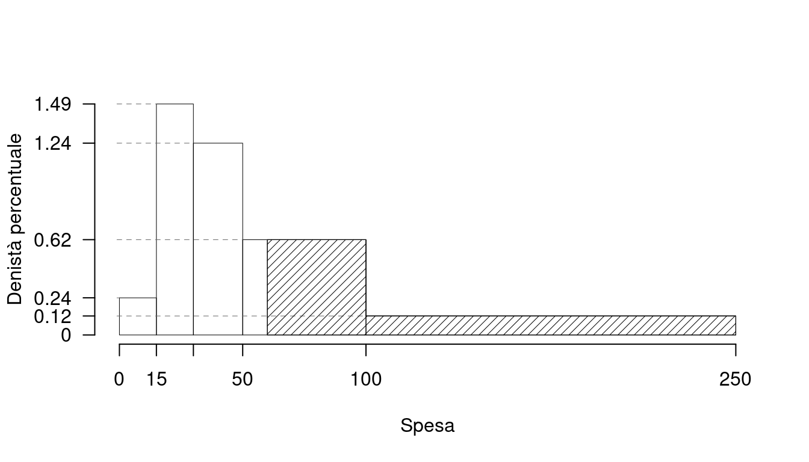
1.b (Punti 3) Qual è la percentuale di famiglie con spesa superiore a 60 euro?
Soluzione
\[\begin{eqnarray*} \%(X> 60 ) &=& ( 100 - 60 )\times h_{ 4 }+ f_{ 5 }\times 100 \\ &=& ( 40 )\times 0.616 + ( 0.184 )\times 100 \\ &=& 0.4304 \times(100)\\ \#(X> 60 ) &\approx& 108 \end{eqnarray*}\]
```{r 25-test-functions-21,, echo=FALSE}
# preparo i parametri
s1 <- 27
n1 <- 37
s2 <- 30
n2 <- 45
alpha <- 0.05
h1 <- "\\neq"
```
`r i2 <- i2+1;item()` Sono stati intervistati `r n1` uomini
e `r n2` donne, `r s1` su `r n1` uomini si sono
dichiarati favorevoli, mentre sono favorevoli `r s2` su `r n2`
donne. Testare al livello di significatività del 5% l'ipotesi che uomini e
donna abbiano lo stesso parare contro l'alternativa che siano diversi.
**Soluzione**
```{r 25-test-functions-22,,results='asis', echo=FALSE}
ztest_2c_pi(s1 = s1,s2 = s2,n1 = n1,n2 = n2,
h1 = h1,alpha = alpha,a = "U",b = "D")
```
`r i2 <- i2+1;item()` Costruire un intervallo di confidenza al 95% per
la proporzione di uomini favorevoli
**Soluzione**
```{r 25-test-functions-23,,results='asis', echo=FALSE}
idc(xm = s1,alpha = .95,n = n1 ,dist_ = "z")
```5.a Sono stati intervistati 37 uomini e 45 donne, 27 su 37 uomini si sono dichiarati favorevoli, mentre sono favorevoli 30 su 45 donne. Testare al livello di significatività del 5% l’ipotesi che uomini e donna abbiano lo stesso parare contro l’alternativa che siano diversi.
Soluzione
Test \(Z\) per due proporzioni
\(\fbox{A}\) FORMULAZIONE DELLE IPOTESI
\[\begin{cases} H_0: \pi_\text{U} = \pi_\text{D} \\ H_1: \pi_\text{U} \neq \pi_\text{D} \end{cases}\]
\(\fbox{B}\) SCELTA E CALCOLO STATISTICA-TEST, \(Z\)
\[\hat\pi_\text{ U }=\frac{s_\text{ U }}{n_\text{ U }}=\frac{ 27 }{ 37 }= 0.7297 \qquad \hat\pi_\text{ D }=\frac{s_\text{ D }}{n_\text{ D }}=\frac{ 30 }{ 45 }= 0.6667 \]Calcoliamo la proporzione comune sotto \(H_0\) \[ \pi_C=\frac{s_\text{ U }+s_\text{ D }}{n_\text{ U }+n_\text{ D }}= \frac{ 57 }{ 82 }= 0.6951 \]\[\begin{eqnarray*} \frac{\hat\pi_\text{ U } - \hat\pi_\text{ D }} {\sqrt{\frac {\pi_C(1-\pi_C)}{n_\text{ U }}+\frac {\pi_C(1-\pi_C)}{n_\text{ D }}}}&\sim&N(0,1)\\ z_{\text{obs}} &=& \frac{ ( 0.7297 - 0.6667 )} {\sqrt{\frac{ 0.6951 (1- 0.6951 )}{ 37 }+\frac{ 0.6951 (1- 0.6951 )}{ 45 }}} = 0.6173 \, . \end{eqnarray*}\]
\(\fbox{C}\) CONCLUSIONE
Il \(p_{\text{value}}\) è
\[ p_{\text{value}} = P(|Z|>|0.62|)=2P(Z>0.62)=0.537051 \]
\[ 0.1 < p_\text{value}= 0.537051 \leq 1 \]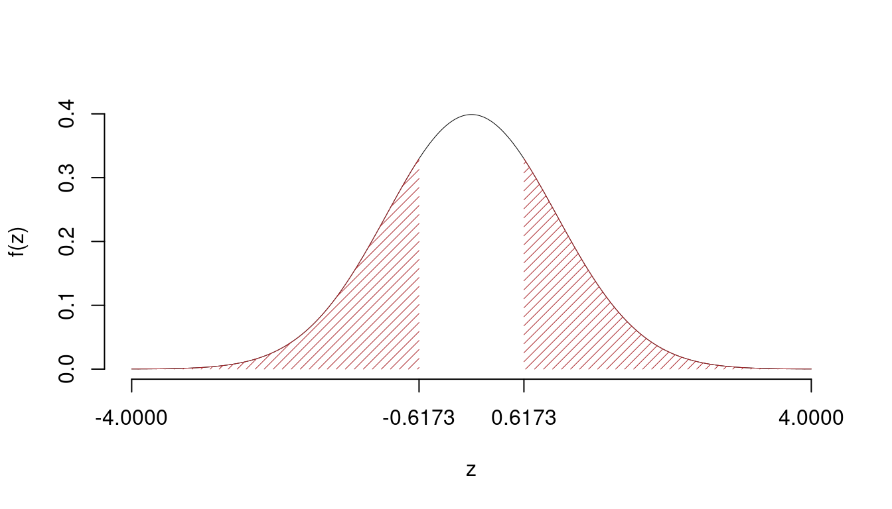
Non rifiuto \(H_0\) a nessun livello di significatività,
\(p_\text{value}>0.1\), non significativo
5.b Costruire un intervallo di confidenza al 95% per la proporzione di uomini favorevoli
Soluzione
\(1-\alpha =0.05\) e quindi \(\alpha=0.95\rightarrow \alpha/2=0.475\)
\[ \hat\pi = \frac{S_n}n = \frac{ 27 }{ 37 }= 0.7297 \]
\[\begin{eqnarray*} Idc: & & \hat\pi \pm z_{\alpha/2} \times \sqrt{\frac{\hat\pi(1-\hat\pi)}{n}} \\ & & 0.7297 \pm 0.06271 \times \sqrt{\frac{ 0.7297 (1- 0.7297 )}{ 37 }} \\ & & 0.7297 \pm 0.06271 \times 0.07301 \\ & & [ 0.7252 , 0.7343 ] \end{eqnarray*}\]